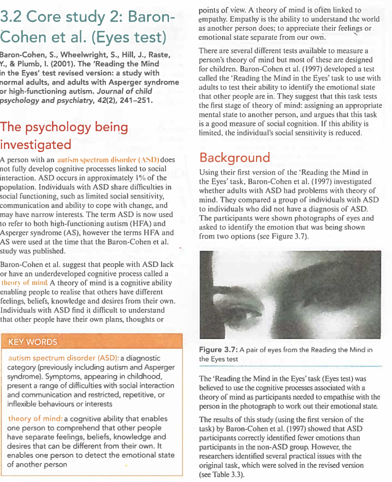
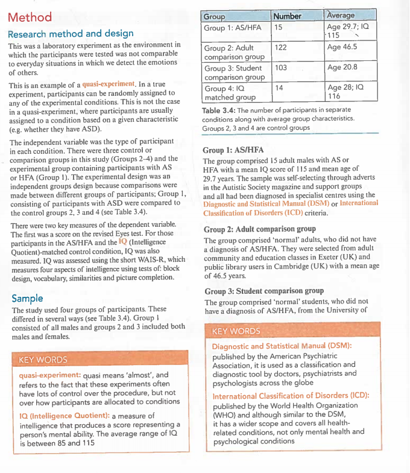
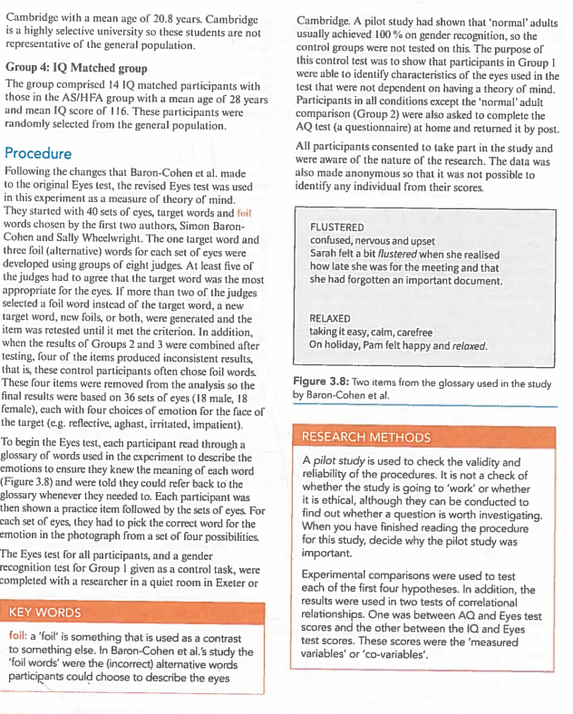
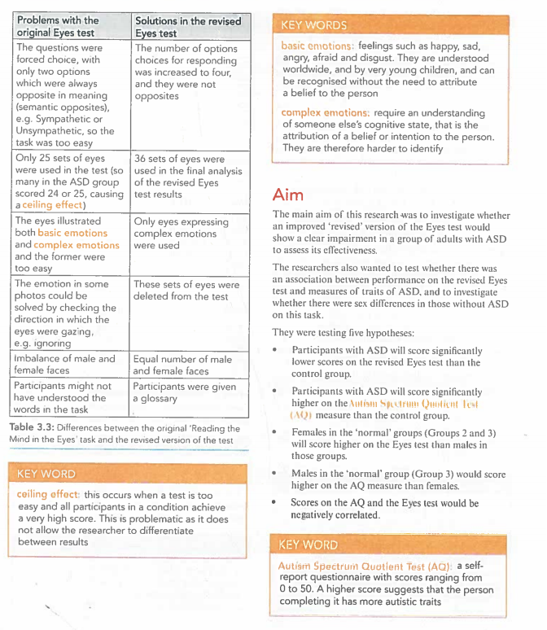
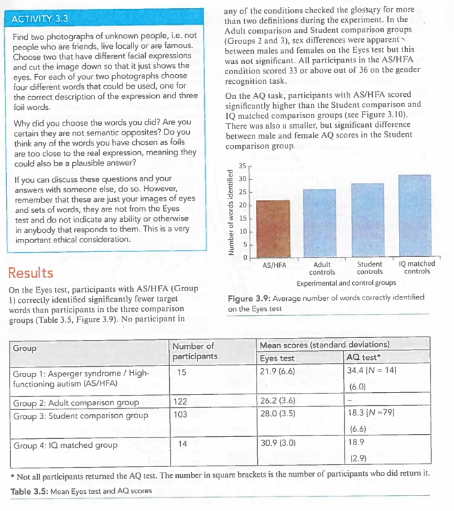
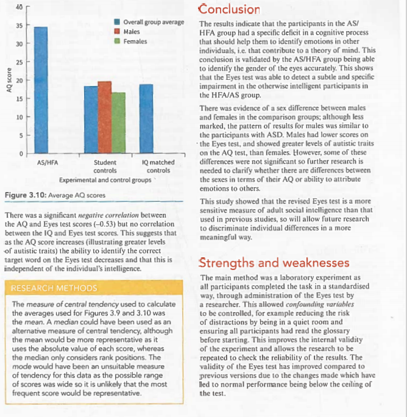
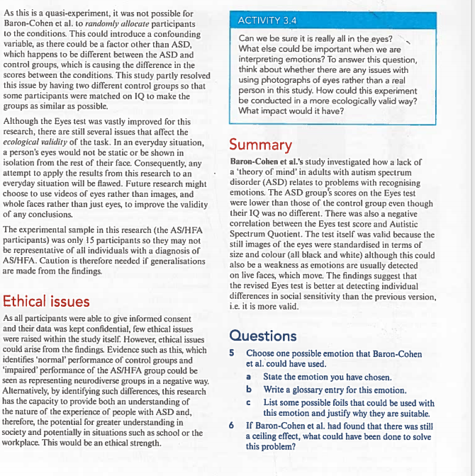

👁️ Baron-Cohen et al. (2001) Reading the Mind in the Eyes Test (Revised Version)
Baron-Cohen, S., Wheelwright, S., Hill, J., Raste, Y., & Plumb, I. (2001). The 'Reading the Mind in the Eyes' Test revised version: A study with normal adults, and adults with Asperger syndrome or high-functioning autism. Journal of Child Psychology and Psychiatry, 42(2), 241–251. CIE Psychology 认知取向 Core Study 2（认知心理学）
1. Background（研究背景）
The psychology being investigated（研究的心理现象）
A person with an autism spectrum disorder（自闭症谱系障碍） does not fully develop cognitive processes linked to social interaction. ASD occurs in approximately 1% of the population. Individuals with ASD share difficulties in social functioning, such as limited social sensitivity, communication and ability to cope with change, and may have narrow interests.
The term ASD is now used to refer to both high-functioning autism (HFA)（高功能自闭症） and Asperger syndrome (AS)（阿斯伯格综合征）, however the terms HFA and AS were used at the time that this study was published.
Baron-Cohen et al. suggest that people with ASD lack or have an underdeveloped cognitive process called a theory of mind（心智理论）. A theory of mind is a cognitive ability enabling people to comprehend that others have different feelings, beliefs, knowledge and desires from their own. Individuals with ASD find it difficult to understand that other people have their own plans, thoughts or feelings separate from their own.
💡 什么是 Theory of Mind？ 心智理论是一种认知能力，让你能理解：别人有跟你不一样的感觉、信念、知识和愿望。比如看到朋友哭，你知道她难过——这就是 ToM 在工作。自闭症谱系人士通常在这方面有困难。原文用 "mentalising"（心智化）这个词来描述这个过程。Empathy（共情）是理解他人感受的能力，和 ToM 密切相关。
Empathy（共情） is the ability to understand the world as another person does — to appreciate their feelings or emotional state separate from our own. There are several different tests available to measure a person's theory of mind but most of these are designed for children.
1.1 From Original (1997) to Revised (2001) Eyes Test
In 1997, Baron-Cohen published the first version of the 'Reading the Mind in the Eyes' task. The test used photographs of eyes and asked participants to identify the emotion being shown from two options. The results showed that adults with ASD correctly identified fewer emotions than non-ASD participants. However, the researchers identified several practical issues with the original task:
Problems with the original Eyes test vs Solutions
❌ Problem
✅ Solution in revised version
Only 2 options (too easy — always opposite meanings like sympathetic vs unsympathetic)
4 choices, not semantic opposites
Only 25 sets of eyes (ceiling effect: many scored 24/25)
36 sets of eyes in final analysis
Both basic emotions AND complex emotions mixed (complex ones were too hard)
Only eyes expressing complex emotions used
Some photos could be solved by checking gaze direction (ignoring, gazing at, etc.)
Sets with direction cues were deleted
Imbalance of male/female faces
Equal number of male and female faces
Participants might not know words
A glossary was provided

Figure 3.7: A pair of eyes from the Reading the Mind in the Eyes test（眼睛区域特写示例）
2. Aim（研究目的）
The main aim of this research is to investigate whether an improved 'revised' version of the Eyes test would show a clear impairment in a group of adults with ASD to assess its effectiveness.
The researchers also wanted to test whether there was an association between performance on the revised Eyes test and measures of traits of ASD, and to investigate whether there were sex differences in those without ASD on this task.
Five Hypotheses（五个假设）
Participants with ASD will score significantly lower scores on the revised Eyes test than the control groups.
Participants with ASD will score significantly higher on the Autism Spectrum Quotient (AQ)（自闭症谱系商数） measure than the control groups.
Females in the 'normal' groups (Groups 2 & 3) would score higher on the Eyes test than males in those groups.
Males on the 'normal' group (Group 3) would score higher on the AQ measure than females.
Scores on the AQ and the Eyes test would be negatively correlated.
3. Method（研究方法）
3.1 Research method and design
This was a laboratory experiment（实验室实验） as the environment in which participants were tested was not comparable to everyday situations where we detect emotions of others.
This is an example of a quasi-experiment. In a true experiment, participants can be randomly assigned to any experimental conditions. This is not the case of a quasi-experiment, where participants are usually assigned to a condition based on a given characteristic (e.g., whether they have ASD).
Independent variable (IV)（自变量）： The type of participant in each condition. There were three types of participant in comparison groups in this study:
Group 1: Experimental group containing participants with AS/HFA
Groups 2–4: Comparison/control groups
The experimental design was an independent measures design（独立测量设计） because comparisons were made between different groups of participants. Group 1 consisted of participants with ASD compared to the control of Groups 2, 3 and 4.
Dependent variables (DV)（因变量）：
Score on the revised Eyes test (out of 36)
Score on the AQ (Intelligence Quotient-matched)（智商匹配的自闭症量表）
IQ was assessed using the short WAIS-R, measuring four aspects of intelligence using tests of block design, vocabulary, similarities and picture completion.
3.2 Sample（样本）
The study used four groups of participants. These differed in several ways:
Group
Number
Average characteristics
Group 1: AS/HFA
15
All adult males, Age 29.7, IQ 115 ↓
Group 2: Adult comparison group
122
Age 46.5
Group 3: Student comparison group
103
Age 20.8
Group 4: IQ matched group
14
Age 28, IQ 116

Table 3.4: The number of participants in separate conditions along with average group characteristics
Group Details（各组的详细说明）
Group 1 (AS/HFA): Comprised 15 adult males with AS or HFA with mean IQ of 115 and mean age of 29.7 years. Sample self-selected through adverts in the Autistic Society magazine and support groups. All had been diagnosed using DSM or ICD criteria.
Group 2 (Adult comparison): 'Normal' adults who did not have a diagnosis of AS/HFA, selected from adult community and education classes in Exeter (UK), mean age 46.5 years.
Group 3 (Student comparison): 'Normal' students without AS/HFA diagnosis, from University of Cambridge, mean age 20.8 years.
Group 4 (IQ matched): 14 IQ matched participants with AS/HFA, mean age 28, IQ 116, randomly selected from general population.
💡 注意：DSM = Diagnostic and Statistical Manual（美国精神疾病诊断与统计手册），ICD = International Classification of Disorders（国际疾病分类）。两者都是全球通用的精神疾病诊断标准。WAIS-R 是 Wechsler Adult Intelligence Scale-Revised（韦氏成人智力测验修订版），用来测 IQ。
4. Procedure（程序）
4.1 How the Revised Eyes Test Works
Following the changes that Baron-Cohen made to the original Eyes test, the revised Eyes test was used in this experiment as a measure of theory of mind.
To begin the Eyes test, each participant read through a glossary（词汇表） of words the experimenter used to describe the emotions to ensure they knew the meaning of each word (Figure 3.8). They were told they could refer back to the glossary whenever they needed to.

Figure 3.8: Two items from the glossary used in the study（词汇表示例："Flustered" 和 "Relaxed"）
They started with 40 sets of eyes, target words and foil words chosen by Simon Baron-Cohen and Sally Wheelwright. One set of target words and three foil (alternative) words for each set of eyes were developed using groups of eight judges. At least five of the judges had to agree that the target word was the most appropriate word for the item. If more than two of the selected foil words were incorrect alternatives, a new target word, new foils, or both, were generated and retested until Groups 2 and 3 agreed.
💡 Foil words 是什么？ 每张眼睛图片对应一个正确答案（target word，目标词）和三个干扰选项（foil words）。比如正确答案是 "playful"，三个干扰词可能是 serious、bored、irritated。这些干扰词都是不正确的替代描述，用来增加难度。 Judges（评委）要确保目标词确实是最准确的那个。
In addition, four control items produced inconsistent results. These four items were removed from the analysis so the final results were based on 36 sets of eyes (18 male, 18 female), each with four choices of emotion for the face of the target (e.g., reflective, aghast, irritated, impatient).
The Eyes test for all participants, and a gender recognition test for Group 1 (given as a control task), were completed for a researcher in a quiet room in Exeter or Cambridge.
A pilot study had shown that 'normal' adults usually achieved 100% on gender recognition, so this control group was not tested for this purpose. The purpose of this control was to identify whether participants in Group 1 were able to identify characteristics of the eyes used in the test that were not dependent on having a theory of mind.
Participants in all conditions except the 'normal' adult comparison (Groups 2 and 3), sex differences were apparent — this was not significant. All participants in the AS/HFA condition scored 33 or above out of 36 on the gender recognition task.

Table 3.3: Differences between original and revised Eyes test + Aim + Key Words
All participants consented to take part in the study and were aware of the nature of the research. Data were also anonymous so that it was not possible to identify any individual from their scores.
5. Results（结果）
5.1 Main Finding: AS/HFA Group Scored Significantly Lower
On the Eyes test, participants with AS/HFA (Group 1) correctly identified significantly fewer target words than participants in the three comparison groups (Figure 3.9).

Figure 3.9: Average number of words correctly identified + Table 3.5: Mean scores (SD)
Group
N
Eyes test Mean (SD)
AQ test* Mean (SD)
Group 1: AS/HFA
15
21.9 (6.6)
34.4 [N=14]
Group 2: Adult comparison
122
26.2 (3.6)
—
Group 3: Student comparison
103
28.0 (3.5)
18.3 [N=79] (6.6)
Group 4: IQ matched controls
14
30.9 (3.0)
18.9 (2.9)
*Not all participants returned the AQ test
📊 关键数据解读：
AS/HFA 组平均只答对 21.9/36（61%）
IQ 匹配对照组答对 30.9/36（86%）→ 差距显著！
学生对照组最高：28.0/36（78%）
说明即使 IQ 相同，ASD 人群在识别情绪方面仍有显著困难 → 支持 ToM 缺陷假设
5.2 AQ Scores: AS/HFA Much Higher
On the AQ task, participants with AS/HFA scored significantly higher than the Student comparison and IQ matched comparison groups, but there was also a smaller, significant difference between male and female AQ scores in the Student comparison group.

Figure 3.10: Average AQ scores across groups（各组的平均 AQ 分数）
5.3 Sex Differences
There was evidence of a sex difference: although males and females in the comparison groups marked the pattern of results as males lower on the Eyes test and showed greater levels of autistic traits on the AQ test than females. However, some of these differences were not significant so further research is needed to clarify whether there are differences between the sexes in terms of their AQ or ability to attribute emotions to others.
5.4 Correlation between AQ and Eyes Test
There was a significant negative correlation between the AQ and Eyes test scores (r = −0.53) but no correlation between the IQ and Eyes test scores. This suggests that as the AQ score increases (illustrating greater levels of autistic traits), the ability to identify the correct target word on the Eyes test decreases — and that this is independent of the individual's intelligence.
🔬 r = −0.53 表示中等强度的负相关：AQ 越高（自闭症特质越多），Eyes Test 得分越低。而且这个相关与 IQ 无关！这说明 Eyes Test 测量的不是一般智力，而是特定的社会认知能力（social cognition）。
6. Conclusion（结论）
The results indicate that the participants in the AS/HFA group had a specific deficit（特定缺陷） in a cognitive process that should help them to identify emotions in other individuals, i.e. contribute to a theory of mind. This conclusion is validated by the AS/HFA group being able to identify the gender of the eyes accurately. This shows that the Eyes test was able to detect a subtle and specific impairment in otherwise intelligent participants in the HFA/AS group.
There was evidence of a sex difference between males and females in the comparison groups: although less marked, the pattern of results as males lower on the Eyes test, and showed greater levels of autistic traits on the AQ test, than females. However, some of these differences were not significant.
This study showed that the revised Eyes test is a more sensitive measure of adult social intelligence than that of previous studies, which will allow future research to discriminate individual differences in a more meaningful way.
7. Strengths and Weaknesses（优缺点评价）
Strengths（优点）
Laboratory experiment with standardised procedure: All participants completed the task in a standardised way, allowing confounding variables to be controlled (quiet room, same instructions, glossary). This improves internal validity（内部效度）.
Controlled variables: Administration of the Eyes test by the researcher reduced risk of distortions. Gender recognition task controlled for whether participants could even process visual information about eyes.
Reliability check: The experiment allowed the reliability of the results to be repeated to check validity. Pilot study checked procedures beforehand.
Multiple comparison groups: Having 4 groups (including IQ-matched) strengthens the conclusion that differences are due to ASD, not intelligence or age.
Improved over original: Fixed ceiling effect, increased difficulty, removed gender/direction bias, added glossary — making the test more sensitive to detecting individual differences.
Cross-sectional design allows quick data collection across different populations.
Quantitative data: Easy to analyse statistically, objective scoring.
Weaknesses（缺点）
Quasi-experiment limitations: Not possible to randomly allocate participants, so confounding variables could differ between ASD and control groups. Partly resolved by having IQ-matched Group 4, but not fully.
Sample issues: Only 15 participants in AS/HFA group — very small! May not be representative of all people with AS/HFA. Caution needed if generalising findings to the whole ASD population.
Ecological validity concerns: In an everyday situation, a person's validity would not be static. Isolation from the rest of the face means results may not apply to real-world emotion recognition (we normally see whole faces, not just eyes!). Future work might choose to use videos rather than images.
Potential demand characteristics: Participants knew they were doing a 'psychology test' which might influence behaviour.
Cultural bias: All photos were of white/Caucasian faces — may not generalise to other ethnicities.
No longitudinal data: Cannot show causation, only correlation between AQ and Eyes test scores.
8. Ethical Issues（伦理问题）
As all participants were able to give informed consent（知情同意）and their data was kept confidential, few ethical issues were raised within the study itself. However, ethical issues could arise from the findings! Evidence such as this, which identifies 'impaired' performance of control groups and the 'impaired' normal performance of the AS/HFA group could be seen as representing neurodiverse groups in a negative way.
Alternatively, by identifying such differences, this research has the capacity to provide both an understanding of the nature of the experience of people with ASD and, therefore, potential for greater understanding of society and the potentially in situations such as school or the workplace. This would be an ethical strength（伦理优势）.

Ethical issues, Activity 3.4, Summary, and Questions
9. Summary（总结）
Baron-Cohen et al.'s study investigated how a lack of 'theory of mind' in adults with autism spectrum disorder (ASD) relates to problems with recognising emotions. The ASD group's scores on the Eyes test were lower than those of the control group even though their IQ was no different. There was also a negative correlation between the Eyes test score and Autistic Spectrum Quotient. The test itself is valid because the size and colour of the eyes were standardised in terms of still images (all black and white) although this could also be a weakness as emotions are usually detected via live faces, which move. The findings suggest the revised Eyes test is better at detecting individual differences in social sensitivity than the previous version, i.e., it is more valid（更有效度）.
10. Key Terms（核心术语表）
Term（英文术语）
中文释义
Autism spectrum disorder (ASD)
自闭症谱系障碍；一种诊断类别，包括自闭症和阿斯伯格综合征
Asperger syndrome (AS)
阿斯伯格综合征；高功能自闭症的一种形式
High-functioning autism (HFA)
高功能自闭症；智力正常的自闭症患者
Theory of mind (ToM)
心智理论；理解他人拥有与自己不同的感受、信念、知识、欲望的认知能力
Mentalising
心智化；进行心智理论操作的过程（原文常用此术语）
Empathy
共情；理解他人感受或情绪状态的能力
Basic emotions
基本情绪；如 happy, sad, angry, afraid, disgust — 全球通用、幼儿即可识别
Complex emotions
复杂情绪；需要理解他人认知状态才能识别的情绪
Autism Spectrum Quotient (AQ)
自闭症谱系商数；自评问卷，分数越高自闭症特质越明显（范围 0–50）
Ceiling effect
天花板效应；测试太简单导致所有人都拿高分，无法区分个体差异
Quasi-experiment
准实验；参与者不能被随机分配到条件的实验设计
Independent measures design
独立测量设计；不同组参与不同条件
Confounding variable
混淆变量；可能影响结果但未被控制的变量
Internal validity
内部效度；实验能在多大程度上确定 IV 导致 DV 变化的程度
Ecological validity
生态效度；研究结果在多大程度上可以推广到真实生活情境
DSM / ICD
诊断标准手册（美国 / 国际版）
WAIS-R
韦氏成人智力测验修订版；测量IQ的标准工具
Foil words
干扰词；Eyes Test 中每个项目的错误选项
Glossary
词汇表；帮助被试理解情绪词汇含义的参考材料
Pilot study
pilot 研究；正式实验前的小规模预试验，用于检查程序有效性
Demand characteristics
需求特征；被试猜测实验目的后调整行为的现象
Informed consent
知情同意；参与者充分了解实验内容后同意参加
Neurodiversity
神经多样性；大脑功能和行为的自然差异（如自闭症不是"缺陷"而是另一种认知方式）
Social cognition
社会认知；处理和理解社会信息的认知能力
11. Activity 3.3 & 3.4
Activity 3.3: Design Your Own Eyes Test Items!
Find two photographs of unknown people (not friends/famous). Choose two that have different facial expressions.
Cut the image down so it just shows the eyes.
For each photo, choose one correct description and three foil words.
Reflect: Why did you choose the words you did? Are any semantically opposites? Could certain foils be too close to a plausible answer? Discuss ethical considerations of using real photos.
Activity 3.4: Critical Thinking
Can we be sure it really is all in the eyes? What else could be important when thinking about emotions? Are there issues with using photographs? Could this experiment be conducted in a more ecologically valid way? What impact would it have?
12. Exam Practice Questions（考试练习题）
[AO1] What is meant by the term 'theory of mind'? (2 marks)
[AO1] Outline one problem with the original Eyes test. (2 marks)
[AO1] Describe how Baron-Cohen et al. operationalised the independent variable in this study. (3 marks)
[AO1] Describe the sample used in Group 1 (AS/HFA). Include how they were recruited and any relevant demographic information. (4 marks)
[AO1/AO3] Choose one possible emotion that Baron-Cohen et al. could have used.
a) State the emotion you have chosen.
b) Write a glossary entry for this emotion.
c) List some possible foils that could be suitable for this emotion and justify why they are usable. (6 marks)
[AO3] If Baron-Cohen et al. had found that there was still a ceiling effect, what could have been done to solve this problem? (4 marks)
[AO3] Explain one strength of using a laboratory experiment in this study. (3 marks)
[AO3] Explain one weakness of the sample used in this study. Suggest how it could be improved. (4 marks)
[AO3] Discuss the ethical issues involved in this type of research. (6 marks)
[AO3] Assess whether the Eyes test has good reliability and validity. Use evidence from the study in your answer. (8 marks)
[AO3] To what extent do the findings support the view that people with ASD have a specific deficit in theory of mind? Refer to the data in your answer. (8 marks)
[AO3] Compare and contrast the strengths and weaknesses of the Eyes test as a measure of social cognition compared to another measure you have studied. (10 marks)
🧪 体验完整版 Eyes Test (Revised)
下面是 Baron-Cohen et al. (2001) 的原版「读心眼」测试——1道练习题 + 17道正式题。每张图都是研究中使用的真实照片！